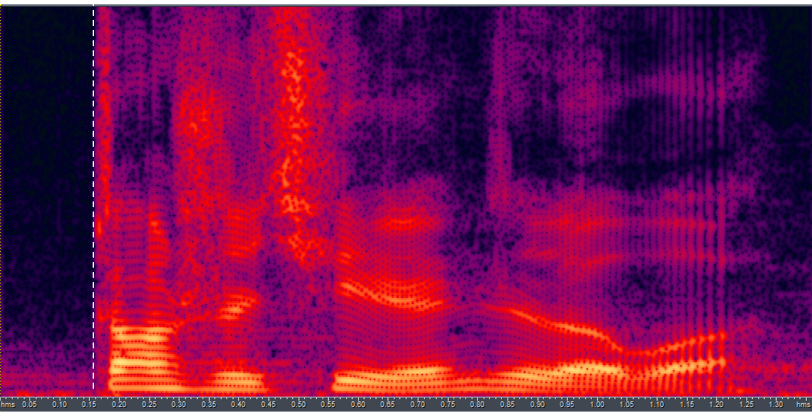
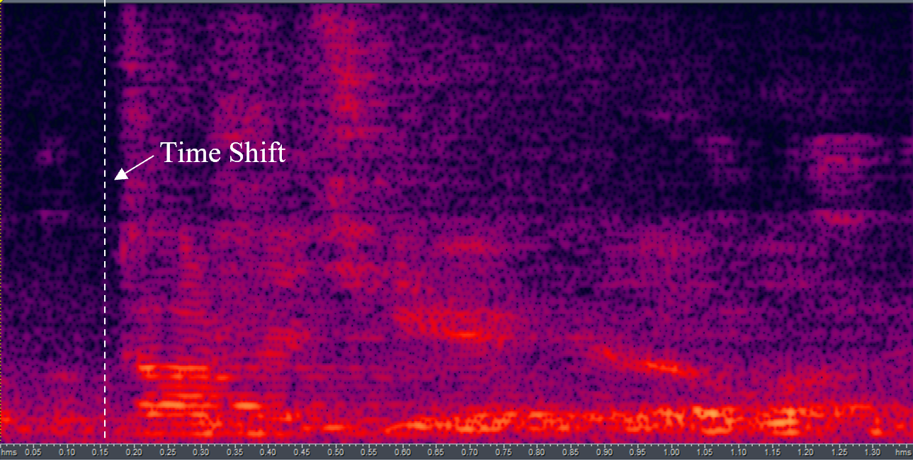

Demo of Direct Sound Estimation (DSE)
Utterance ID: S072-R03_S072073_C01_I1_Far-112160_112296
Near
Your browser does not support the audio element.

GSS
Your browser does not support the audio element.
